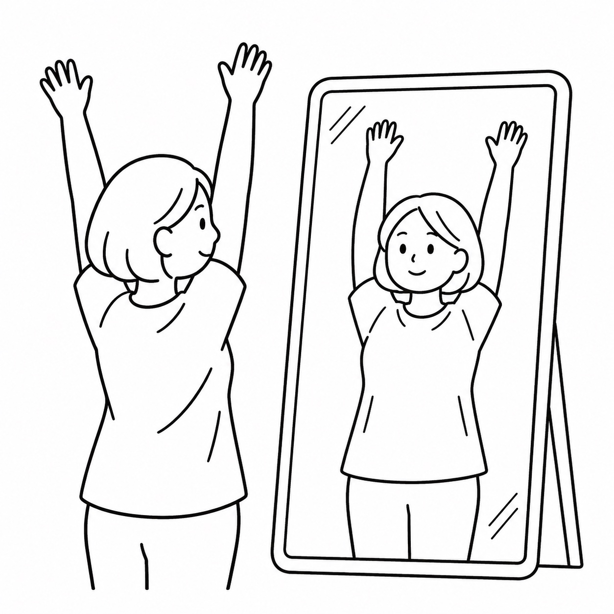
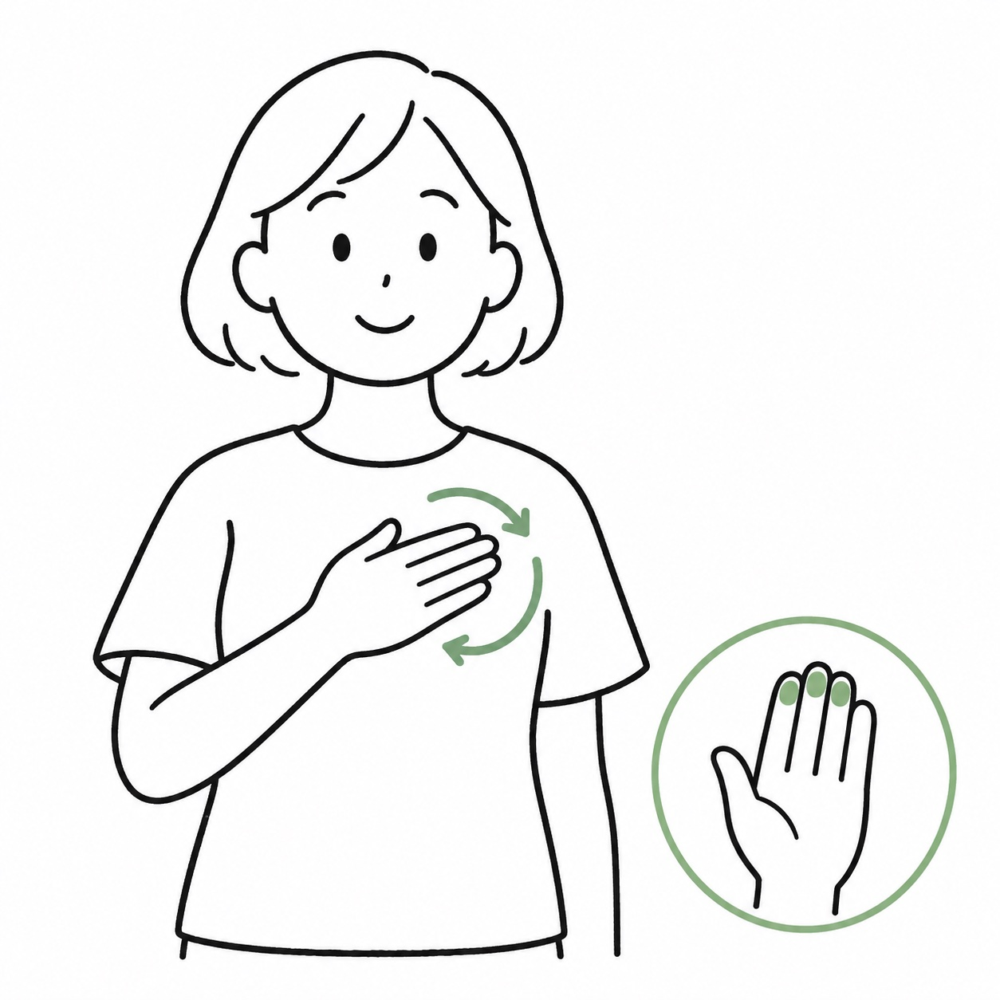
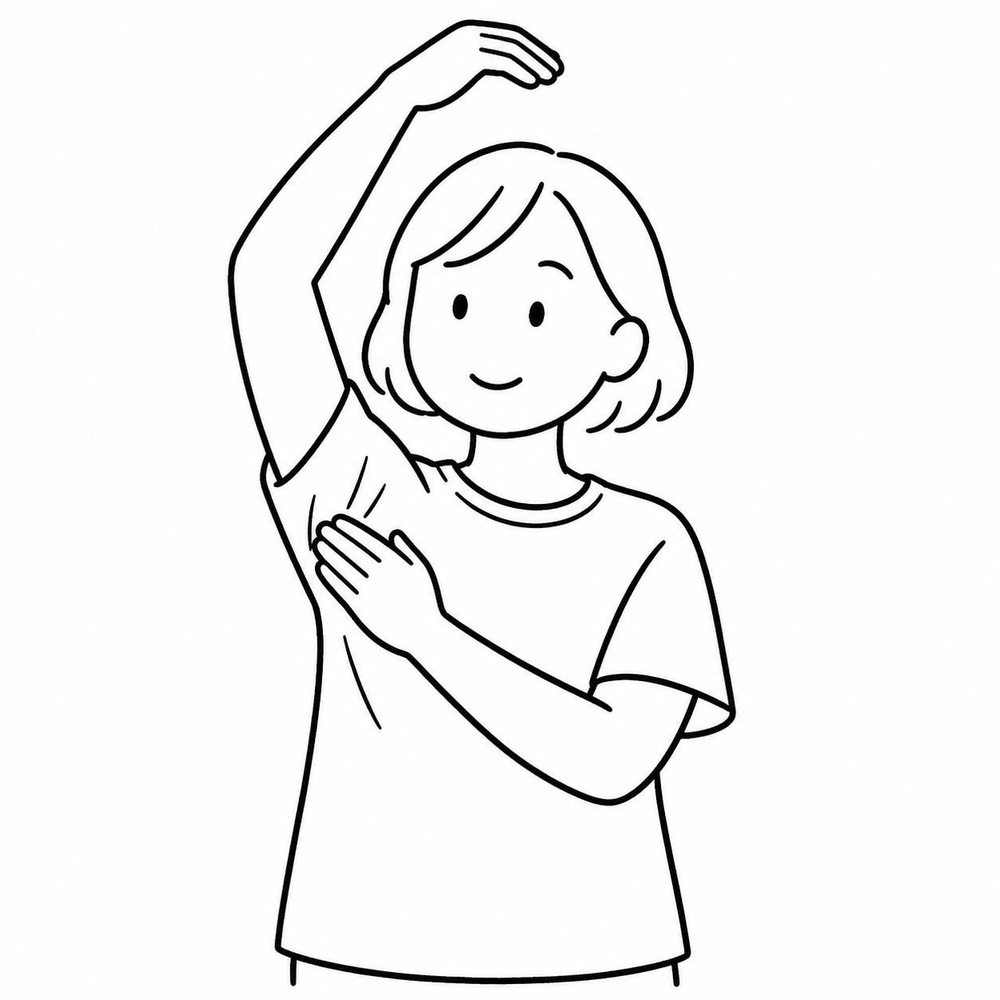

確認用原稿：医学的な最終確認前です。
日常で、自分の体を気にかける
乳房の変化に気づく
着替えや入浴のときに、乳房の見た目や触れた感じを少し気にかけてみましょう。普段の状態を知り、変化があれば相談につなげる「ブレスト・アウェアネス」の紹介です。
「普段の自分」を知ることから
乳房の大きさや硬さには個人差があり、月経の周期によっても変わります。左右の違いだけで判断せず、自分のいつもの状態と比べてみましょう。
決まった手順を完璧に覚えたり、毎回しこりを探し出そうとしたりする必要はありません。着替えやシャワーなど、日常の機会に無理なく気にかけることが基本です。
見方・触れ方の目安
以下は、普段の状態を知るための方法です。触れた感触から、がんの有無を判断することはできません。
鏡で見る

姿勢と手の使い方のイメージ（服を着た状態で示しています） 腕を下ろした姿勢や、両腕を上げた姿勢で、乳房の形、皮膚、乳首の様子を見ます。以前になかったくぼみやひきつれ、ただれなどがないか気にかけましょう。
指の腹で、やさしく触れる

姿勢と手の使い方のイメージ（服を着た状態で示しています） 反対側の手の指を3〜4本そろえ、指の腹を使います。乳房をつままず、なでるように小さな円を描きながら、乳房全体に少しずつ指を移動します。普段とは違う硬い部分やしこりがないか感じてみましょう。
わきの下も気にかける

姿勢と手の使い方のイメージ（服を着た状態で示しています） 乳房の外側からわきの下にも触れ、いつもと違うふくらみなどがないか確認します。シャワーで石けんがついた手を使うときや、あおむけになった姿勢では触れやすいことがあります。
方法の参考：東京都の図入りの解説、大阪がん循環器病予防センターの解説
気にかけたい変化
- 以前にはなかったしこりや、硬い部分
- 乳房の形の変化、皮膚のくぼみ・ひきつれ
- 乳首からの血が混じった分泌物
- 乳首やその周りの湿疹・ただれ
気になる変化があれば、自分の触り方が正しかったかを確かめ続けるより、医療機関に相談しましょう。
セルフチェックと乳がん検診は、役割が違います
触って変化がなくても、乳がんがないとは言い切れません。小さながんなど、自分では気づけないものもあります。セルフチェックはマンモグラフィなどの検診の代わりにはなりません。
日本では、症状のない40歳以上の女性に、2年に1回のマンモグラフィによる乳がん検診が勧められています。個別に検査や経過観察の指示がある方は、医療機関の指示に従ってください。
気になる症状があるときは、検診ではなく診療を受けます。40歳になるまで待つ必要もありません。
健康診断・検診のガイドを見る大事なこと3つ
- 見て・触れて、普段の自分の乳房を知る。
- 変化に気づいたら、次の検診を待たずに相談する。
- セルフチェックだけで安心せず、対象となる検診も受ける。
参考資料
- 国立がん研究センター：乳がん 予防・検診
- 国立がん研究センター：乳がん検診について
- 東京都：ブレスト・アウェアネスって？
- 大阪がん循環器病予防センター：ブレスト・アウェアネス
- 日本乳癌学会：乳がん検診とブレスト・アウェアネス
一般的な健康情報です。個別の診断を行うものではありません。原稿作成日：2026年11月26日